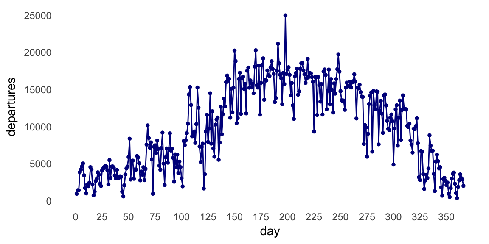
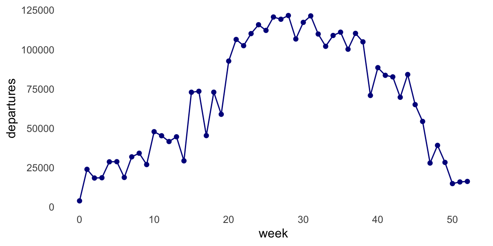
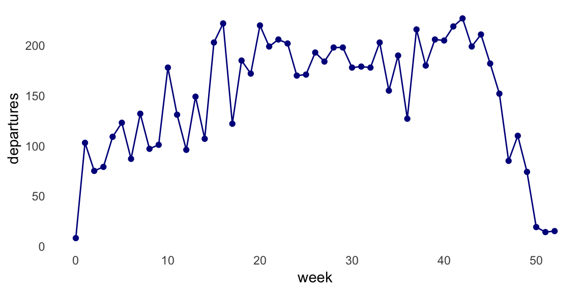

These results were generated with version a5f2a6b on 2018-03-07
✔ SUCCESS: The R Markdown file is up-to-date
| Version | Author | Date |
|---|---|---|
| 1ff72fc | Peter Carbonetto | 2018-03-07 |
| 93bd97c | Peter Carbonetto | 2018-03-07 |
| a5f2a6b | Peter Carbonetto | 2018-03-07 |
| 5b8e33f | Peter Carbonetto | 2017-11-16 |
| 6b9ddf1 | Peter Carbonetto | 2017-08-02 |
| c6e8686 | Peter Carbonetto | 2017-07-31 |
| 6d02ffc | Peter Carbonetto | 2017-07-13 |
| 984143c | Peter Carbonetto | 2017-07-07 |
| e4ba033 | Peter Carbonetto | 2017-07-07 |
| c8f7e10 | Peter Carbonetto | 2017-07-06 |
| 6ef7a6c | Peter Carbonetto | 2017-07-06 |
✔ SUCCESS: These results were generated in a clean R environment
Ignored files:
Ignored: .DS_Store
Ignored: analysis/.DS_Store
Ignored: data/Divvy_Stations_2016_Q1Q2.csv
Ignored: data/Divvy_Stations_2016_Q3.csv
Ignored: data/Divvy_Stations_2016_Q4.csv
Ignored: data/Divvy_Trips_2016_04.csv
Ignored: data/Divvy_Trips_2016_05.csv
Ignored: data/Divvy_Trips_2016_06.csv
Ignored: data/Divvy_Trips_2016_Q1.csv
Ignored: data/Divvy_Trips_2016_Q3.csv
Ignored: data/Divvy_Trips_2016_Q4.csv
Ignored: data/README.txt
Ignored: data/data.tar.gz
Ignored: docs/.DS_Store
Untracked files:
Untracked: docs/seasonal-trends_files/figure-html/plot-trips-by-day-1.png
Untracked: docs/seasonal-trends_files/figure-html/plot-trips-by-week-1.png
Untracked: docs/seasonal-trends_files/figure-html/plot-trips-by-week-uchicago-1.png
Unstaged changes:
Modified: docs/first-glance.html
Modified: docs/station-map.html
Modified: docs/time-of-day-trends.html
✔ SUCCESS: These results were generated with the seed 1
✔ SUCCESS: The session information was recorded at the end of the analysis
In this last analysis, I use the Divvy trip data to examine biking trends in Chicago over the course of one year.
I begin by loading a few packages, as well as some additional functions I wrote for this project.
library(data.table)
library(ggplot2)
source("../code/functions.R")First, I read in the Divvy trip and station data from the CSV files.
divvy <- read.divvy.data()
# Reading station data from ../data/Divvy_Stations_2016_Q4.csv.
# Reading trip data from ../data/Divvy_Trips_2016_Q1.csv.
# Reading trip data from ../data/Divvy_Trips_2016_04.csv.
# Reading trip data from ../data/Divvy_Trips_2016_05.csv.
# Reading trip data from ../data/Divvy_Trips_2016_06.csv.
# Reading trip data from ../data/Divvy_Trips_2016_Q3.csv.
# Reading trip data from ../data/Divvy_Trips_2016_Q4.csv.
# Preparing Divvy data for analysis in R.
# Converting dates and times.I would like to analyze city-wide departures for each day of the year, so I create a new “day of year” column.
divvy$trips <-
transform(divvy$trips,
start.dayofyear = factor(as.numeric(format(divvy$trips$starttime,"%j")),
1:366))I also convert the “start week” column to a factor to make it easier to compile trip statistics for each week in the year.
divvy$trips <- transform(divvy$trips,start.week = factor(start.week,0:52))Here, I create a new vector containing the number of trips taken in each day of the year, and then I plot these numbers.
counts.day <- as.vector(table(divvy$trips$start.dayofyear))
ggplot(data.frame(day = 1:366,departures = counts.day),
aes(x = day,y = departures)) +
geom_point(color = "darkblue",shape = 19,size = 1) +
geom_line(color = "darkblue") +
scale_x_continuous(breaks = seq(0,350,25)) +
theme_minimal() +
theme(panel.grid.major = element_blank(),
panel.grid.minor = element_blank())
This plot shows a sizeable increase in bike trips during summer days, but since the number of trips varies widely from one day to the next, I think the plot will look nicer if instead we count the number of trips per week.
counts.week <- as.vector(table(divvy$trips$start.week))
ggplot(data.frame(week = 0:52,departures = counts.week),
aes(x = week,y = departures)) +
geom_point(color = "darkblue",shape = 19,size = 1.5) +
geom_line(color = "darkblue") +
theme_minimal() +
theme(panel.grid.major = element_blank(),
panel.grid.minor = element_blank())
Indeed, the seasonal trends are less noisy in this plot; the majority of Divvy bike trips in Chicago are taken when the weather is warmer (weeks 20–40), and very few people are using the Divvy bikes in the cold winter months.
When we analyze trips taken at the University of Chicago bike station, the “bump” during warmer months flattens out. This is probably because a large fraction of University of Chicago students leave during the summer.
dat <- subset(divvy$trips,from_station_name == "University Ave & 57th St")
counts.week.uchicago <- as.vector(table(dat$start.week))
ggplot(data.frame(week = 0:52,departures = counts.week.uchicago),
aes(x = week,y = departures)) +
geom_point(color = "darkblue",shape = 19,size = 1.5) +
geom_line(color = "darkblue") +
theme_minimal() +
theme(panel.grid.major = element_blank(),
panel.grid.minor = element_blank())
sessionInfo()
# R version 3.4.3 (2017-11-30)
# Platform: x86_64-apple-darwin15.6.0 (64-bit)
# Running under: macOS High Sierra 10.13.3
#
# Matrix products: default
# BLAS: /Library/Frameworks/R.framework/Versions/3.4/Resources/lib/libRblas.0.dylib
# LAPACK: /Library/Frameworks/R.framework/Versions/3.4/Resources/lib/libRlapack.dylib
#
# locale:
# [1] en_US.UTF-8/en_US.UTF-8/en_US.UTF-8/C/en_US.UTF-8/en_US.UTF-8
#
# attached base packages:
# [1] stats graphics grDevices utils datasets methods base
#
# other attached packages:
# [1] ggplot2_2.2.1 data.table_1.10.4-3
#
# loaded via a namespace (and not attached):
# [1] Rcpp_0.12.15 knitr_1.20 whisker_0.3-2
# [4] magrittr_1.5 munsell_0.4.3 colorspace_1.3-2
# [7] rlang_0.2.0.9000 stringr_1.3.0 plyr_1.8.4
# [10] tools_3.4.3 grid_3.4.3 gtable_0.2.0
# [13] git2r_0.21.0 htmltools_0.3.6 yaml_2.1.17
# [16] lazyeval_0.2.1 rprojroot_1.3-2 digest_0.6.15
# [19] tibble_1.4.2 repdoc_0.0.0.9000 fs_1.1.0
# [22] clisymbols_1.2.0 evaluate_0.10.1 rmarkdown_1.9
# [25] labeling_0.3 stringi_1.1.6 pillar_1.2.1
# [28] compiler_3.4.3 scales_0.5.0 backports_1.1.2This reproducible R Markdown analysis was created with repdoc